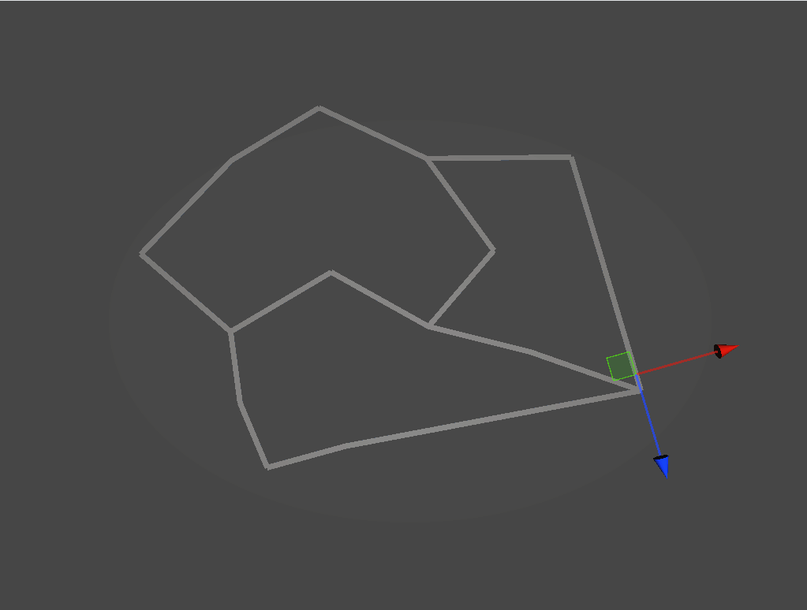
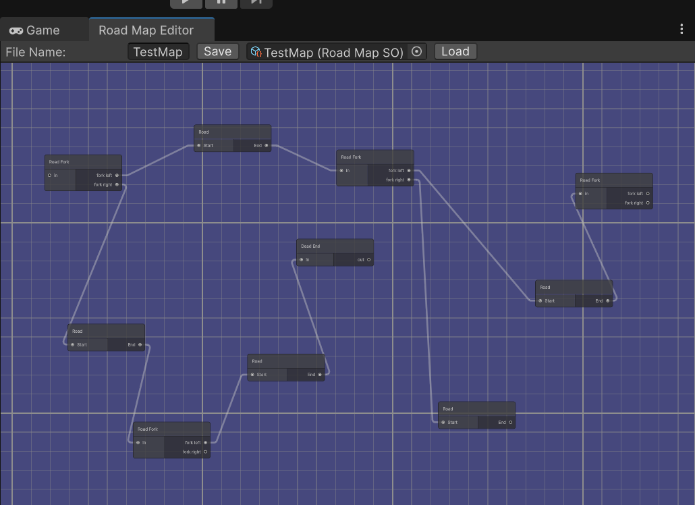
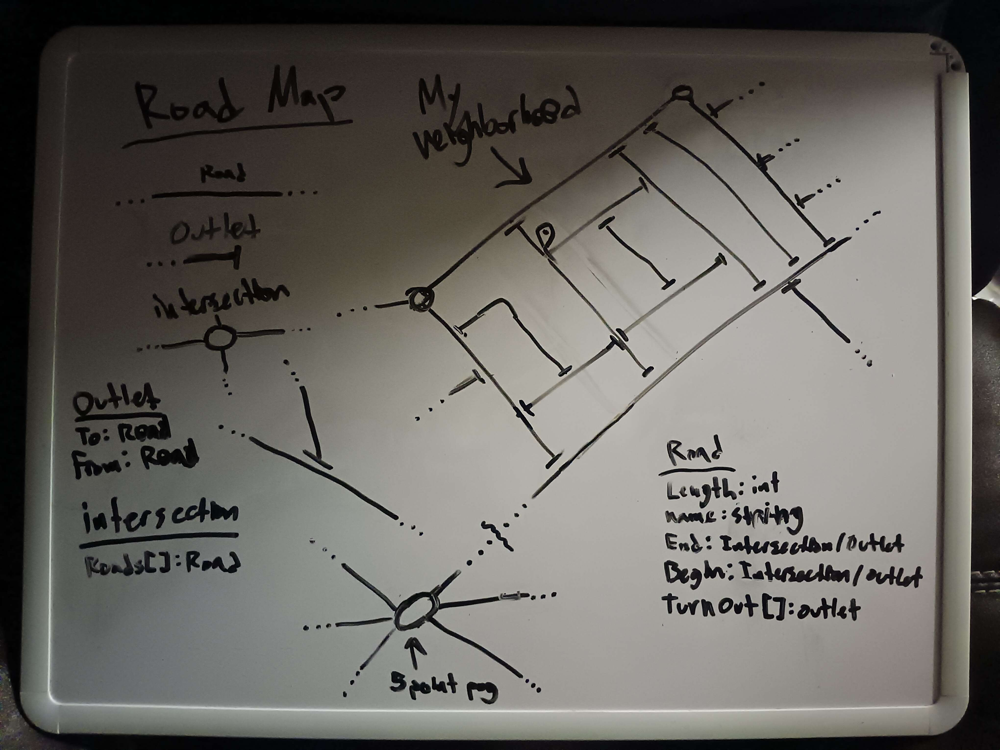

Road Map Tool


Overview
The Road Map Tool is a custom Unity Editor tool that I developed as part of my portfolio work. It allows game developers to quickly and easily create road networks within their game worlds.
Features
- Visual road creation directly in the Unity Editor
- Point-and-click interface for placing road segments
- Automatic road mesh generation
Development Process
This project was created as a way to learn more about Unity Editor tool development. I wanted to understand how to create custom tools that could make the game development process more efficient.
Key learning points included:
- Unity Editor scripting and custom inspector windows
- Creating intuitive user interfaces for tools
Technical Details
- Built using Unity's Editor scripting API
- Implemented in C# using Unity's custom editor tools
Future Improvements
- Add support for different road types and intersections
- Implement automatic terrain generation and modification
- Customizable road properties (width, texture, etc.)
Development Process
What was I thinking?
I wanted to create a tool that would allow me to make creating a system of roads easier. It was made for a game Idea I had about driving. A more story driven game where you drive around a town and do things.

Node System Implementation
To Show off that the node system works properly I made a road follower to demonstrate usage of the Road Map generate by the tool.